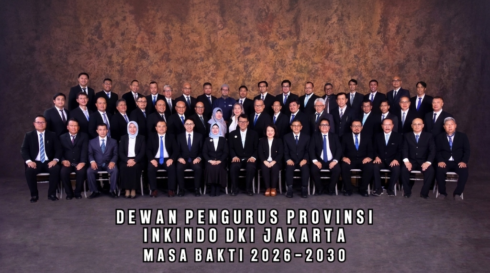

Tentang Kami
Profil INKINDO DKI Jakarta: Mengenal lebih dekat sejarah, visi, misi, dan kode etik yang kami junjung tinggi dalam upaya memajukan ekosistem jasa konsultansi di Indonesia.
Sejarah INKINDO DKI Jakarta
INKINDO (Ikatan Nasional Konsultan Indonesia) merupakan asosiasi perusahaan konsultan independen yang didirikan pada tanggal 29 Juni 1979, sebagai hasil fusi antara IKINDO (Ikatan Konsultan Indonesia) dan PKTPI (Persatuan Konsultan Teknik Pembangunan Indonesia). Anggota INKINDO tersebar di 33 provinsi di seluruh Indonesia dan total memiliki anggota 7000 perusahaan konsultan.
INKINDO DKI Jakarta teletak di Provinsi Daerah Khusus Ibukota Jakarta, sekarang memiliki anggota aktif 900 perusahaan, merupakan INKINDO provinsi terbesar diantara 33 provinsi di Indonesia. Anggota INKINDO DKI Jakarta dikelompokan dalam 3 (tiga) kualifikasi : Besar (20%), Menengah (45%), dan Kecil (35%). Beberapa anggota INKINDO DKI Jakarta telah menangani banyak proyek-proyek terkemuka, di Indonesia dan di manca negara.

Visi & Misi
Visi
Gerak Cepat Memajukan Anggota yang Berkelanjutan.
Misi
- Meningkatkan pelayanan yang proaktif, cepat, mudah, dan terjangkau.
- Memperkuat kapasitas dan kolaborasi antara Anggota (pelatihan, akses informasi dan permodalan, SDM).
- Memperkuat peran sebagai mitra strategis pemerintah, swasta dan sinergi dengan DPN INKINDO, DPP provinsi lain, mitra kerja, serta asosiasi.
- Membina Anggota dalam menghadapi dinamika regulasi.
- Menjadikan INKINDO DKI sebagai organisasi yang inovatif, adaptif, transparan dan akuntabel.
Kode Etik
Dengan menjunjung tinggi Etika Ikatan Nasional Konsultan Indonesia sebagai dasar yang dinamis untuk melayani sesama manusia, maka tiap Anggota Ikatan Nasional Konsultan Indonesia wajib untuk:
Menjunjung tinggi kehormatan, kemuliaan, dan nama baik profesi konsultan dalam hubungan kerja dengan pemberi tugas sesama rekan konsultan dan masyarakat.
Bertindak jujur, tidak memihak, serta penuh dedikasi melayani pemberi tugas dan masyarakat.
Tukar menukar pengetahuan bidang keahlian secara wajar dengan rekan konsultan dan kelompok profesi serta meningkatkan pengetahuan masyarakat terhadap profesi konsultan sehingga dapat lebih menghayati karya konsultan.
Menghormati prinsip pemberian imbalan jasa yang layak dan memadai bagi konsultan, sehingga dapat dipertanggungjawabkan secara profesional dan moral yang menjamin dapat dilaksanakannya tugas yang dipercayakan memenuhi semua persyaratan yang terkait dengan keahlian, kompetensi, dan integritas tinggi.
Menghargai dan menghormati reputasi profesional rekan konsultan dan setiap perjanjian kerja yang berhubungan dengan profesinya.
Mendapatkan tugas terutama berdasarkan standar keahlian profesional tanpa melalui cara-cara persaingan yang tidak sehat.
Bekerjasama sebagai konsultan hanya dengan rekan konsultan atau tenaga ahli lain yang memiliki integritas tinggi.
Menjalankan asas pembangunan berkelanjutan dalam semua aspek pelayanan jasa konsultan sebagai bagian integral dari tanggungjawabnya terhadap sesama, lingkungan kehidupan yang luas, dan generasi yang akan datang.